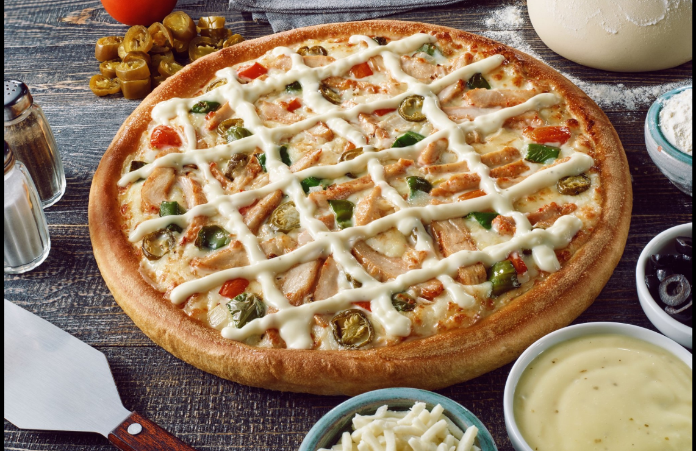

Chicken Ranch Pizza is a delicious pizza made with tender chicken pieces,
creamy ranch sauce, melted mozzarella cheese, and a crispy pizza crust.
It is a flavorful dish loved by pizza fans everywhere.

Ingredients
Pizza Dough
2 cups all-purpose flour
1 tsp salt
1 tsp sugar
1 tbsp yeast
1 cup warm water
1 tbsp olive oil
Chicken Topping
2 cups cooked chicken breast, shredded
1 tsp salt
½ tsp black pepper
1 tsp garlic powder
Pizza Toppings
1 cup ranch sauce
2 cups mozzarella cheese
½ cup sliced mushrooms
½ cup sliced bell peppers
½ cup sliced onions
Cooking Instructions
Mix flour, salt, sugar, yeast, warm water, and olive oil to make the dough.
Knead the dough for about 10 minutes until smooth.
Cover the dough and let it rise for 1 hour.
Preheat the oven to 200°C.
Roll the dough into a pizza shape and place it on a baking tray.
Spread ranch sauce evenly over the dough.
Add shredded chicken on top.
Sprinkle mozzarella cheese over the pizza.
Add mushrooms, bell peppers, and onions.
Bake for 15–20 minutes until the cheese melts and the crust becomes golden.
Enjoy your delicious Chicken Ranch Pizza!
If you are still having trouble you can refer to this
video